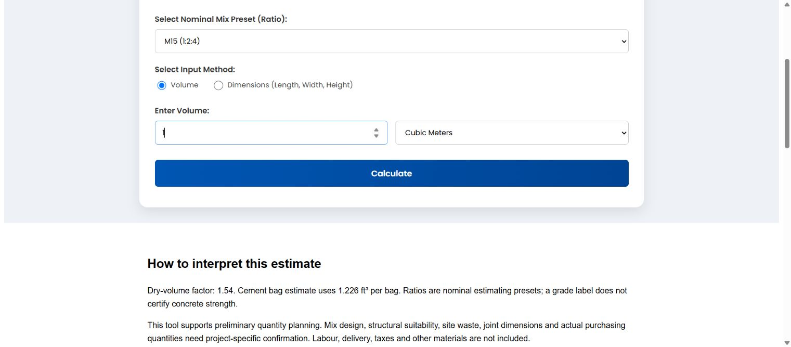

Ozairwebs / Public development tools
Enter your dimensions to make a preliminary estimate. Review the assumptions below before using the result.
Dry-volume factor: 1.54. Cement bag estimate uses 1.226 ft³ per bag. Ratios are nominal estimating presets; a grade label does not certify concrete strength.
This tool supports preliminary quantity planning. Mix design, structural suitability, site waste, joint dimensions and actual purchasing quantities need project-specific confirmation. Labour, delivery, taxes and other materials are not included.
Calculation details and examples · Discuss a custom calculator
Select the 1:2:4 preset and enter 1 m³. The 1.54 dry factor gives 1.54 m³ of dry materials: 0.22 m³ cement, 0.44 m³ sand and 0.88 m³ aggregate. The built-in bag-volume approximation gives about 6.34 cement bags. It does not add a waste allowance.
No. The historical grade labels identify ratio presets in this estimator. Concrete strength depends on an approved mix design, materials, water content, production and curing, which this tool does not evaluate.
The calculator multiplies wet volume by 1.54 as a fixed estimating allowance. It is an assumption of this tool, not a measurement of your actual materials. Confirm the appropriate approach for the project.
This version uses a fixed 1.226 ft³ bag-volume approximation. It has no bag-weight or density input. Do not interpret it as a configurable weight-based ordering model.
No. Output covers nominal material quantities only. Waste, delivery, labour, taxes and prices are separate. Retain the unrounded estimate and decide purchase rounding with the supplier.
The image shows a real browser calculation using the example above.
